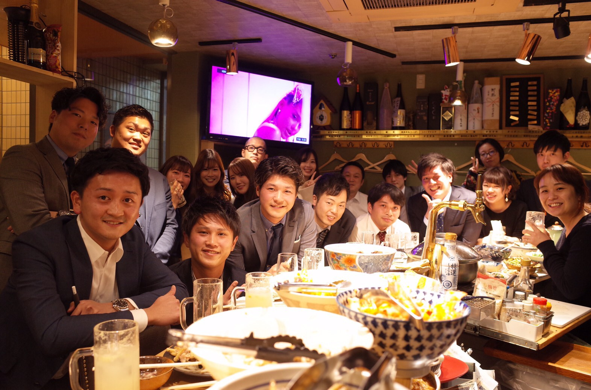
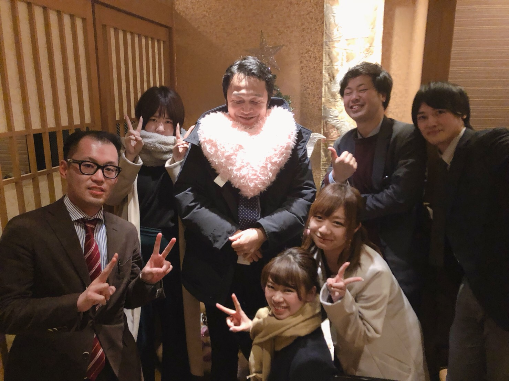
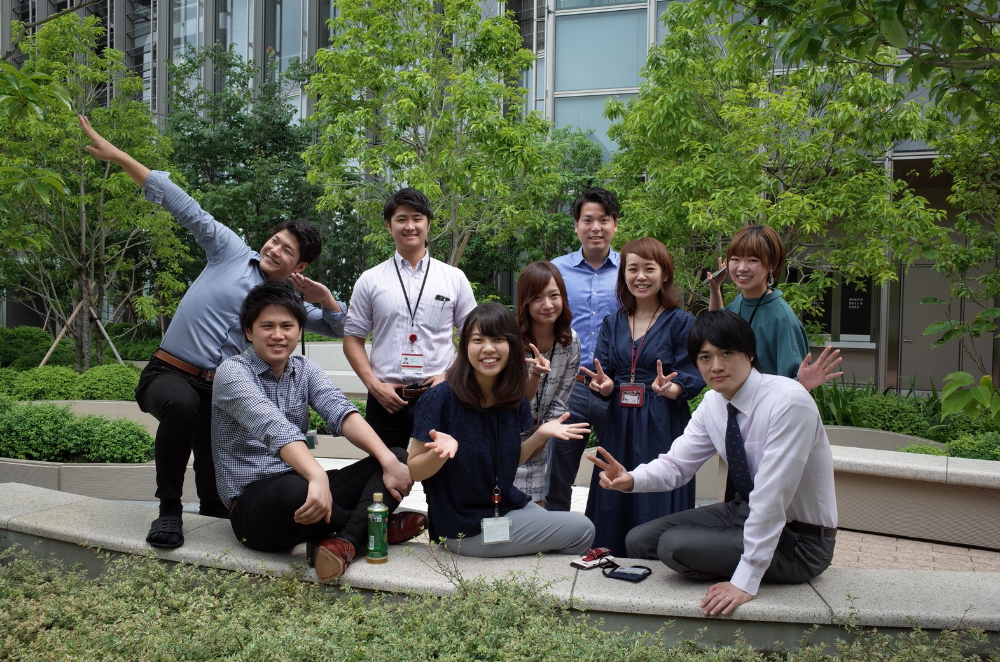

営業部では、こんなことしていました。
私は2017年新卒新入社員として、ぐるなびに入社し、3年間営業部として働いていました。
業務内容と1日のスケジュールをざっくりご紹介いたします。
目次
- 業務内容
- 一日のスケジュール
- チームメンバー
1.業務内容
未加盟店に向けての新規営業と加盟店へのコンサル営業
- 《新規営業》
- 《既存営業》
新宿エリアを中心にテレアポ、もしくは飛び込み営業をしていました。
アポイントが取れた店舗に対しては実際に訪問し、現状をヒアリング・課題抽出し、課題解決法を提案していました。
加盟店の課題を解決するために、蓄積されているビックデータやトレンド・エリア情報、他店舗の成功事例を用いて、
提案→効果検証→新たな課題抽出を行なっていました。
また集客だけでなく、メニュー開発や人材など多方面で店舗様と売上アップ目指してきました。
2.一日のスケジュール
| 08：40 | 出社 |
| 09：00 | 朝礼 |
| 09：30 | チームミーティング |
| 10：00 | 提案資料作成、案件作成 |
| 12：00 | 外出 |
| 13：00 | お客様先アポ |
| 18：00 | 帰社 |
| 18：30 | 提案資料作成、依頼対応 |
| 20：00 | 退社 |
3.チームメンバー
2017.6〜2019.3 佐藤チーム

2019.4〜2020.3 岡野定チーム